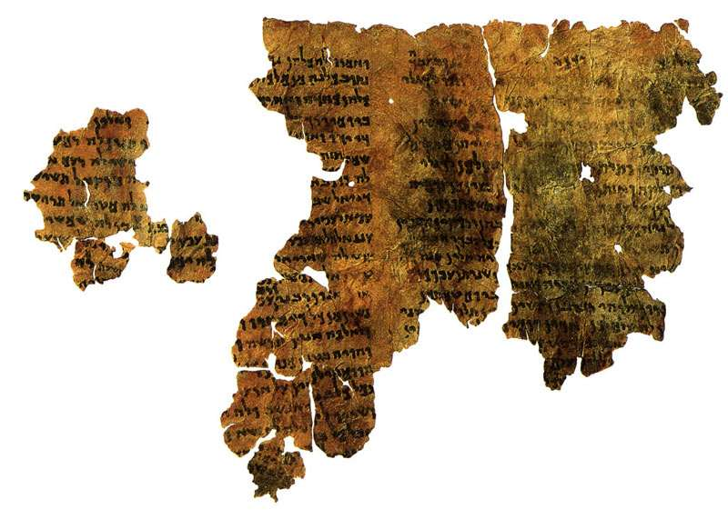
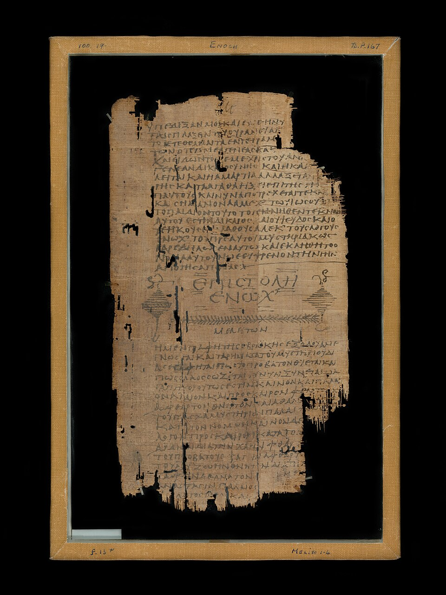

Handschriften van Henoch
de oudste getuigen van 1 Henoch — en hoe betrouwbaar elk deel is
1. De oudste fragmenten

Aramees — 4Q201 (4QHenochᵃ)
Het oudste bekende fragment van Henoch, in de oorspronkelijke Aramese taal. Onder de Qumran-vondsten zijn elf Aramese Henoch-handschriften geïdentificeerd. Zij bevestigen het Boek der Wachters, het Astronomische boek, de Droomvisioenen en de Brief van Henoch — maar niet de Gelijkenissen (zie tabel hieronder).
- Bevindt zich: Israel Antiquities Authority / Israël Museum
- Gevonden: 1947–1956 bij Qumran (Dode Zeerollen)
- Attesteert: Henoch 1–36, 72–108 (gedeeltelijk)

Grieks — Papyrus Chester Beatty XII
Griekse vertaling van (een deel van) Henoch. Deze papyrus bevat het slot van de Brief van Henoch (Hen. 106) samen met een homilie van Melito. Daarnaast is de Griekse tekst bewaard in de Codex Panopolitanus (Akhmim, 6e eeuw) en bij de kroniekschrijver Georgius Syncellus.
- Bevindt zich: Chester Beatty Library, Dublin
- Verworven: door Alfred Chester Beatty (ca. 1930), Egypte
- Attesteert: Henoch 97–107 (Brief van Henoch)

Ge'ez — Ethiopische handschriften
Alléén in het Ge'ez is Henoch volledig bewaard gebleven; de Ethiopische kerk nam het op in haar canon. De westerse wetenschap kreeg de tekst pas terug toen James Bruce in 1773 drie Ethiopische Henoch-handschriften meebracht naar Europa. Deze late handschriften gaan terug op een veel oudere vertaling (± 4e–6e eeuw).
- Bevindt zich: Bodleian Library (Oxford), BnF (Parijs), British Library e.a.
- Naar Europa gebracht: door James Bruce (1773), Ethiopië
- Attesteert: Henoch 1–108 (volledig, incl. de Gelijkenissen)
De vindplaats — Qumran
In de grotten bij Qumran werden vanaf 1947 de Dode Zeerollen gevonden, waaronder de Aramese Henoch-fragmenten. Dat een boek als Henoch daar in meerdere exemplaren lag, laat zien hoe belangrijk het was in de laat-Joodse periode rond het begin van onze jaartelling.
2. Welke delen zijn oud — en dus betrouwbaar?
1 Henoch is geen eenheid maar een bundel van vijf boeken. Vier ervan worden bevestigd door de oude Aramese en Griekse getuigen; één deel — de Gelijkenissen — ontbreekt volledig in Qumran en in het Grieks, en wordt daarom door veel geleerden als later beschouwd.
| Deel | Hoofdstukken | Oudste getuige | Datering | Betrouwbaarheid |
|---|---|---|---|---|
| Boek der Wachters | 1–36 | Aramees (4QHenochᵃ) + Grieks | ± 200 v.Chr. | Hoog — vroeg én meervoudig bevestigd |
| Gelijkenissen (Similitudes) | 37–71 | alléén Ge'ez | geen oude getuige | Omstreden — geen Aramese of Griekse getuige; vermoedelijk later (1e eeuw n.Chr.) |
| Astronomisch boek | 72–82 | Aramees (4QHenastr) | ± 200 v.Chr. | Hoog |
| Droomvisioenen | 83–90 | Aramees | ± 150 v.Chr. | Hoog |
| Brief van Henoch | 91–108 | Aramees + Grieks (Chester Beatty XII) | ± 100 v.Chr. | Hoog |
3. Waar Gods Woord naar Henoch verwijst
Klik op een verwijzing om die in de tekst te openen.
- Judas 1:14-15 — citeert Henoch 1:9 woordelijk: "Zie, de Heere is gekomen met Zijn vele duizenden heiligen…" Het enige directe citaat uit Henoch in het Nieuwe Testament.
- Genesis 5:21-24 — Henoch "wandelde met God, en hij was niet meer, want God nam hem weg." De kern waar heel de Henoch-traditie op teruggaat.
- Hebreeën 11:5 — "Door het geloof is Henoch weggenomen, opdat hij de dood niet zou zien."
- Lukas 3:37 — Henoch in het geslachtsregister van Jezus Christus.
- 1 Kronieken 1:3 — Henoch in het geslachtsregister van Adam.
- Judas 1:6 & 2 Petrus 2:4 — de "engelen die hun beginsel niet bewaard hebben": een thema dat uitvoerig in het Boek der Wachters (Henoch 6–16) wordt verteld.
→ Lees het boek zelf: Henoch 1 · achtergrond over alle handschriften: Grondteksten — codices
Bronvermelding
Foto's: Wikimedia Commons. Aramees fragment 4Q201 en Griekse papyrus Chester Beatty XII: publiek domein. Qumran-grot: © foto CC BY-SA 4.0 (Peter van der Sluijs). Ge'ez-handschrift BL Or. 485: publiek domein. De datering en indeling volgen de gangbare wetenschappelijke consensus (o.a. G.W.E. Nickelsburg, 1 Enoch, Hermeneia).